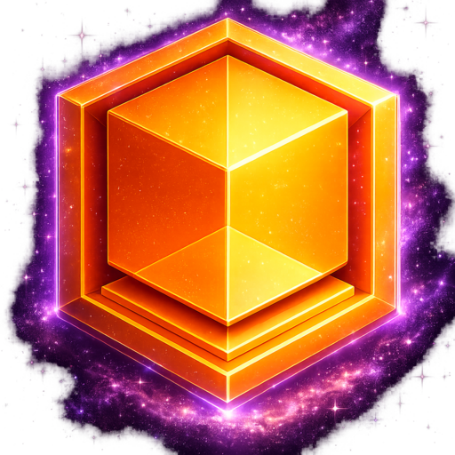

Minekube Launcher
má novou adresu.
Přesouvám tě na minekubelauncher.github.io. Kdyby se nic nestalo, klikni na tlačítko.
Přejít na launcher minekubelauncher.github.io
Přesouvám tě na minekubelauncher.github.io. Kdyby se nic nestalo, klikni na tlačítko.
Přejít na launcher minekubelauncher.github.io